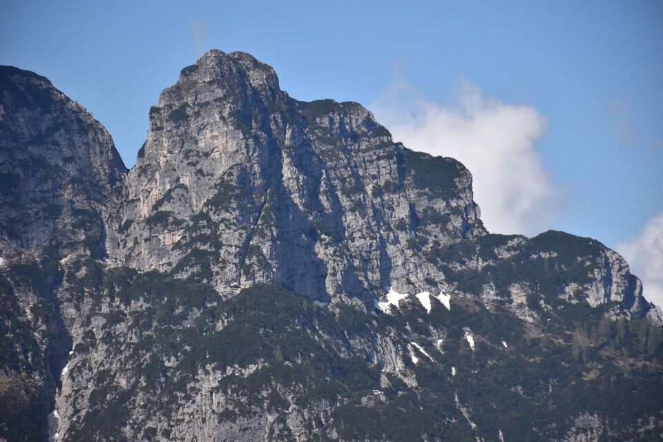
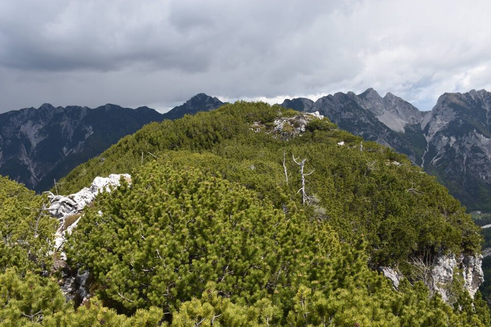
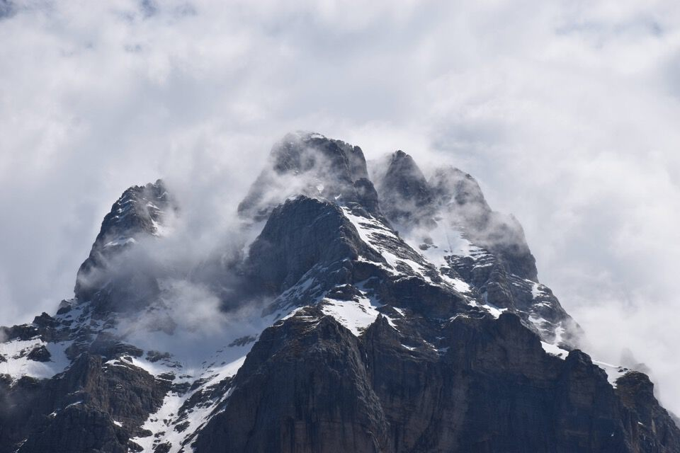

Da Plèziche scendiamo a passare il Dogna e saliamo a casera Saline.
E ora su sempre dritto per il costone: più facile di così...
Interessante l'insospettabile canale che permette di superare una alta fascia di rocce che spezza la continuità del costone.
Nella parte alta del costone iniziamo a vedere qualcosa: qui lo Jôf di Misdì.
La Forca di Vandûl!
La via è un tunnel fra i mughi, con qualche taglio vecchissimo e altri tagli di qualche anno fa. Abbiamo dato anche il nostro contributo.
Visioni magnifiche verso Montasio e Jôf di Miéz.
Staremmo qui tutto il giorno a guardare i giochi delle nuvole sul Montasio.
Il tempo cambia di continuo: nuvole, pioggia, sole... ma che spettacolo.
Verso Dogna.
Scendiamo: bel passaggio fra i due cimotti sommitali.
In discesa seguiamo altri tagli e scendiamo per un canale molto franoso: è meglio l'altra via.
Ci si lustra gli occhi da Chiout.
***